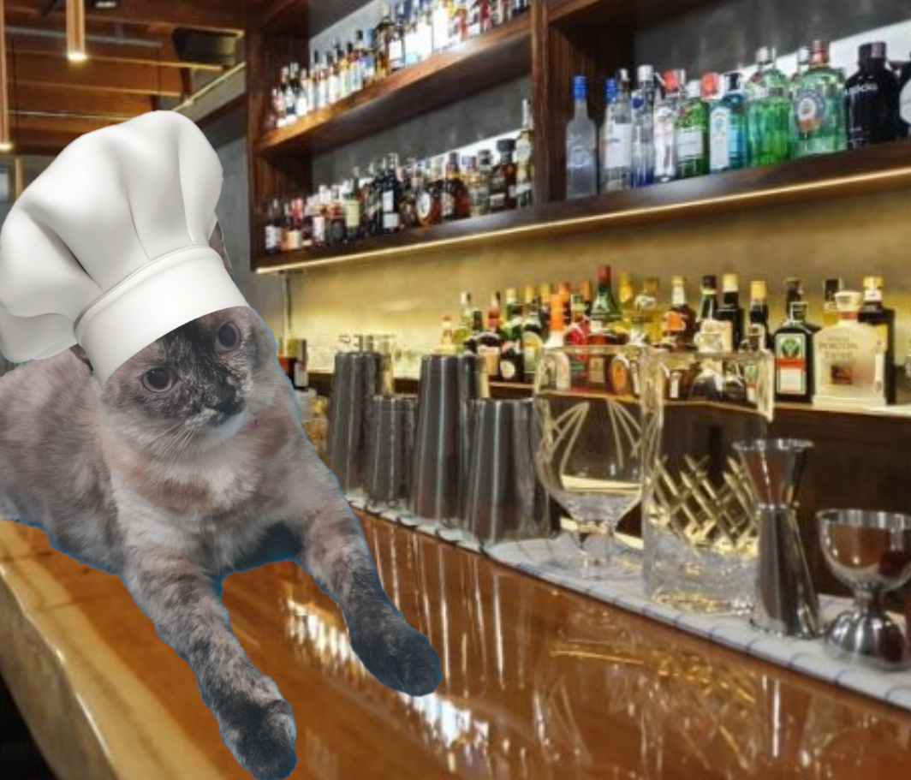

Um restaurante fundado em fevereiro de 2022, temos o objetivo de trazer felicidade e a melhor mistura de sabores possível!
Nosso chef renomado vem de um canto gelado do Canadá, com o objetivo de buscar a verdadeira bebida alcóolica. No caminho, fez vários amigos, como a cozinheira Catarina. Assim, ele decidiu fundar um restaurante, e aproveitar o tempo nele para refinar suas técnicas de criação de drinks.

Saiba mais sobre o incrível dono do nosso bar!
Nossa segunda chef é Catarina, a gata. Ela que manda na área de comidinhas do nosso restaurante.
Com apenas 6 anos já era dona de seu próprio negócio, o barto (bar gato). Hoje com 9 anos é a chefe da cozinha do Bar Beber Cair e Levantar. Depois de meio ano de cursos no instagram, ela é uma das chefs mais famosas do mundo inteiro. Do Grajaú até a Barra, Catarina já cozinhou por todo o Rio de Janeiro, além de suas palestrar mundo afora. Adora carinho perto do rabo e dormir.
Feito por Lucas Carneiro Calmon.